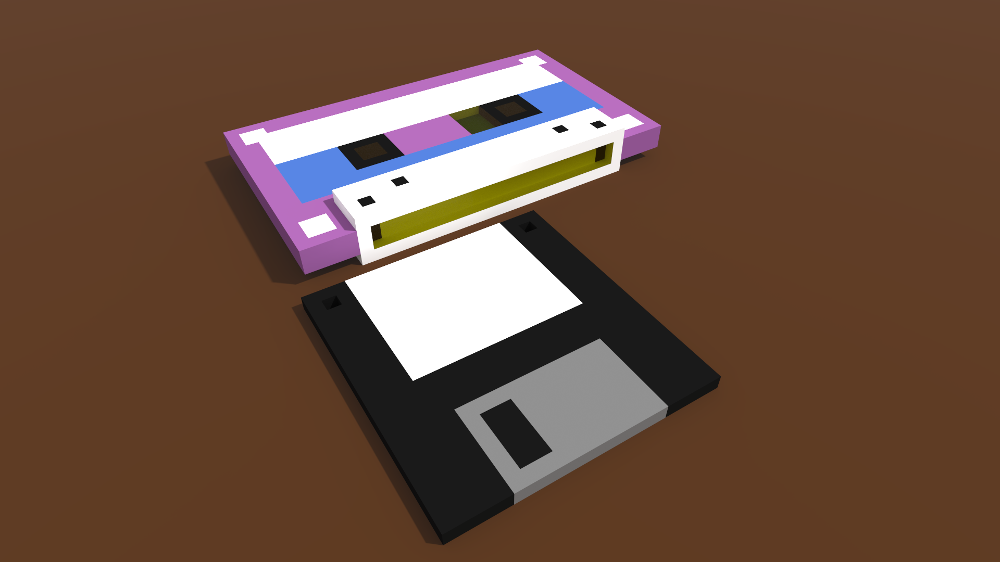

2018 is moving on at an incredible pace, we’re already three down of twelve and it’s showing no signs of slowing down. To try and encourage me to do something productive everyday I’m going to try and get creative…
I’ve played with 3D modelling multiple times over the years, but never really committed to it as I’ve never had a project in mind. I’ve decided to change that up and finally get around to figuring out the basics of Blender after fiddling with it on and off for donkeys.
To that end I’m planning on making something every day or two in April, I’m going to start small with simple prop type creations and see where we end up. As well as Blender I’m going to use this as an excuse to learn other free software, from Krita to MagicaVoxel and any number of other tools that crop up.

Hopefully with some practice I can make things that don’t look terrible and that might look okay in a game environment! Then we can fiddle around in Godot, Unity or something as the months inevitably draw us closer to the end of the year.
First things first though… probably a crate!